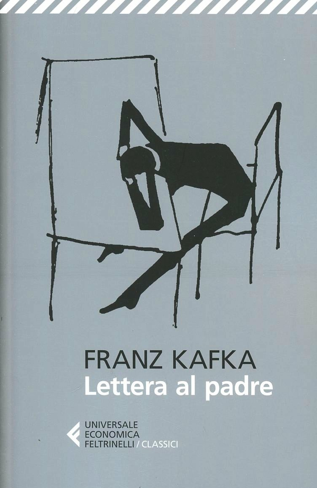

Una lunga lettera che Kafka scrive al padre Hermann per spiegargli, finalmente, il motivo della paura e della distanza che segnano da sempre il loro rapporto. Partendo da una domanda semplice — perché ha paura di lui — il narratore ripercorre episodi dell'infanzia e dell'adolescenza che nel tempo hanno costruito un senso di inadeguatezza mai superato, mostrando come l'ombra paterna abbia finito per condizionare ogni ambito della sua vita: l'educazione, il lavoro, la religione, gli affetti, la scrittura stessa. Il tono oscilla tra il tentativo di comprendere le ragioni dell'altro e la rivendicazione delle proprie ferite, in un equilibrio instabile tra affetto e risentimento. Nata come lettera privata mai davvero recapitata, l'opera diventa una riflessione più ampia sul peso dell'autorità familiare e sulla difficoltà di comunicare tra chi ama e teme allo stesso tempo — una confessione a cuore aperto, intensa e spietatamente onesta.
Ancora non l'ho letto, quindi per ora posso solo offrirti la copertina e la mia buona intenzione.
Ripassa più avanti.
Le frasi più belle di questo libro dormono ancora tra le sue pagine, in attesa che io le scovi.